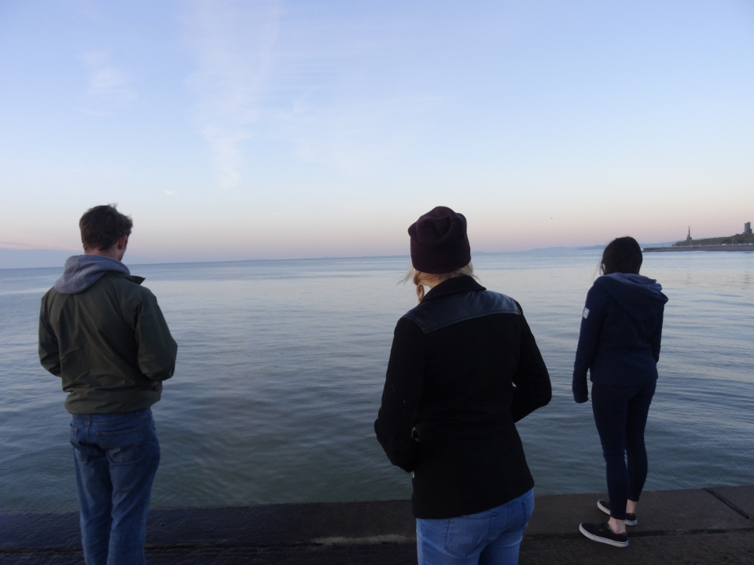

Competent, enthusiastic and approachable: I am a driven individual, keen to make a positive contribution to any situation. My passion to move forward and achieve results means that I often think out of the box, to innovate and take the best path forward.
My education involving Mathematics and Computing has given me a methodical and iterative approach to solving most problems that I am faced with. I love to look at problems and develop a solution to improve or add to existing solutions.
A particular quote I like is from Antoine de Saint-Exupery: "Perfection (in design) is achieved not when there is nothing more to add, but rather when there is nothing more to take away."
I enjoy thinking of solutions and them implementing them to see them finally work. This is why I chose to pursue a career in Software Engineering. The dynamic role of a Software Engineer can provide many different work enviroments and scenarios, individually or as a member of a team.
